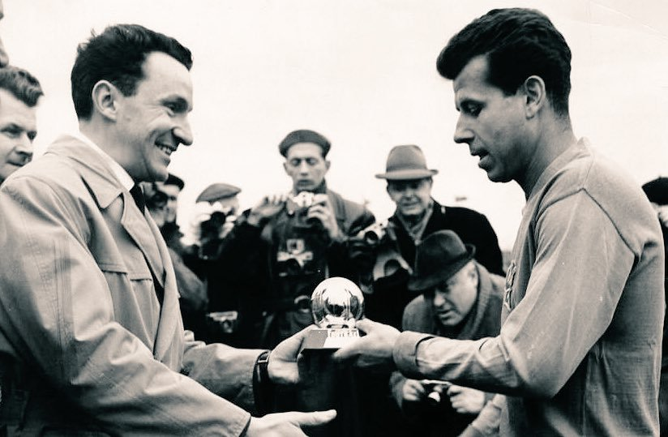
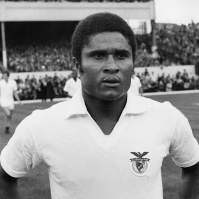
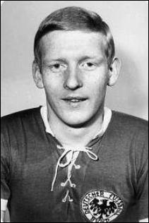

Josef MASOPUST - 1962

- Une omniprèsence discrète
Le milieu de terrain tchécoslovaque puis tchèque
Josef Masopust
, remporte en 1962, à 31 ans le Ballon d’Or.
Nationalité : Tchécoslovoque
Né le : 9 février 1931, à Strimice (TCH)
Décédé le 29 juin 2015, à Prague (TCH)
Taille : 1,74
Poids : 66 kg
Poste : milieu
Clubs : Banik Most (1945-1950), Vodotechna Teplice (1950-1952), Dukla Prague (1952-1968) et RWD Molenbeek (1968-1970)
Palmarès de joueur : Championnat de Tchécoslovaquie 1953, 1956, 1958, 1961, 1962, 1963, 1964 et 1966 ; Coupe de Tchécoslovaquie 1961, 1965 et 1966
Bilan en club : 712 matchs, 229 buts
Bilan en équipe nationale : 63 sélections A, 10 buts (1954-1966)
Bilan en phase finale de Coupe du monde : 2 participations (2e en 1962), 10 matches, 1 but (1958-1962)
Palmarès Ballon d'Or : vainqueur en 1962
Carrière d'entraîneur : Zbrojovka Brno (1976-1980), Hasselt (BEL, 1980-1984), Tchécoslovaquie A (1984-novembre 1987), Indonésie olympiques (1988-mars 1991), Zbrojovka Brno (1992) et Diecin (1993-1996)
Palmarès d'entraîneur : Championnat de Tchécoslovaquie 1978
Classement du Ballon d’Or France Football 1962 :
Josef Masopust (Tchécoslovaquie / Dukla Prague),
65 pts.

Eusébio da Silva Ferreira (Portugal / Benfica),
53 pts.

Karl-Heinz Schnellinger (RFA / Cologne),
33 pts.
Retour à l'accueil
 Josef MASOPUST - 1962
Josef MASOPUST - 1962